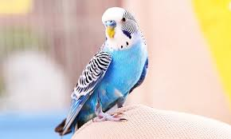

ძაღლები
ძაღლი ადვილად მოსათვინიერებელი და საწვრთნელი ცხოველია, მისი გამოყენება ხდება სხვადასხვა მიზნებისთვის: ნადირობა, მაძებარი ფუნქციები, დაცვითი ფუნქციები, საჭაპანო ფუნქციები (მცირე ტვირთებისა და მარხილებში ჩაბმა). არსებობს ასევე დეკორატიული ჯიშები. ყველაზე ცნობილი და უძველესი ფუნქცია, რაც ძაღლებს აკისრიათ, ესაა შინაური ცხოველების დაცვა (მეცხვარე ძაღლი, იგივე ნაგაზი). გამოირჩევა განსაკუთრებულად განვითარებული ყნოსვით - ზოგიერთი მონაცემით, ძაღლებს შეუძლიათ 40 ათას სხვადასხვა სურნელის გარჩევა-დამახსოვრება.
კატები

კატები არიან ხორცისმჭამელი ცხოველები. მგლების, ძაღლების, მელიების და სხვა ზოგიერთი მტაცებლებლისგან განსხვავებით კატები არიან ყველაფრის მჭამელები. მიჩვევის შემთხვევაში, კატას შეუძლია გახდეს ვეგეტარიანელი, თუმცა, ჩვეულებრივ მოითხოვენ ხორცს. მათ ბრჭყალებს შეუძლია საჭმლის დაჭრა. კატებს აქვთ მოკლე ნაწლავები (როგორც ყველა ხორცისმჭამელს). ზოგჯერ, ისინი მუცელს ისუფთავებენ რწყევით, თუმცა ეს შეიძლება იყოს დაავადებაზე მომანიშნებელიც. კატის კუჭ-ნაწლავის ჯანმრთელობისთვის სასარგებლოა ხორბლის ყლორტი.
თუთიყუშები
თუთიყუშისნაირნი გავრცელებული არიან მეტწილად ტროპიკულ სარტყელში, თუმცა ამერიკაში აღწევენ ჩრდილო განედის 42°-სა და სამხრეთ განედის 54°-ს. თუთიყუშისნაირთა უმეტესობა მეხეურია. ერთეულები (ნესტორი, ციანორამფუსი და სხვა) ცხოვრობენ ველებსა და ნახევრად უდაბნოებში. ზოგიერთ თუთიყუშისნაირს (ახალზელანდიური კაკაპო ანუ ბუსებრი თუთიყუში) დაკარგული აქვს ფრენის უნარი. თუთიყუშისნაირნი მონოგამური ფრინველებია. ბუდეს იკეთებენ ხის ფუღუროებში, ქვებს შორის ნაპრალებში და სხვა.დედალი დებს 2-3 ან 5-8 თეთრ კვერცხს. კრუხობს მეტწილად დედალი. ინკუბაცია გრძელდება 3 კვირამდე. ბარტყი იჩეკება შიშველი და თვალაუხილავი.